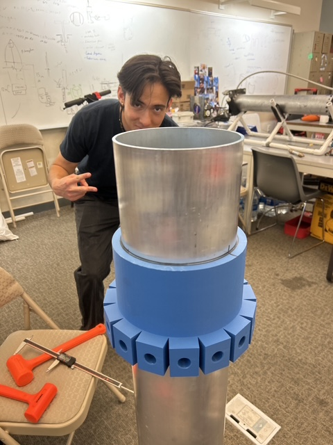
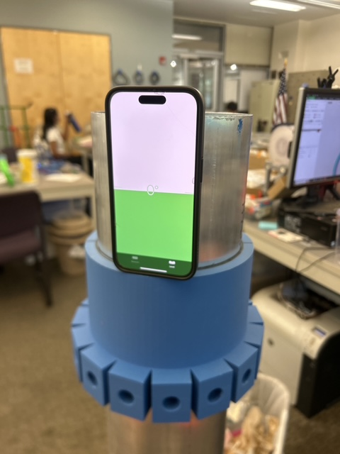
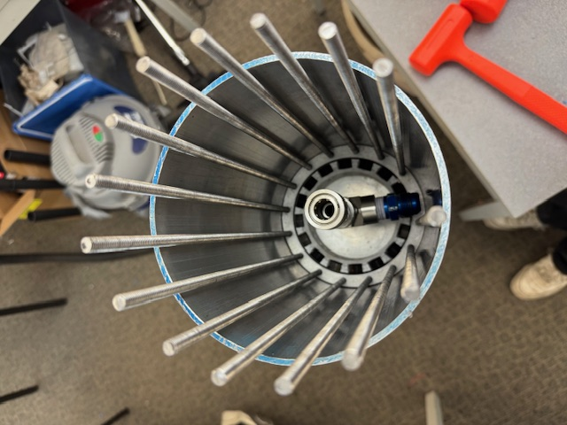

Bulkhead Drill Jig
Overnight fixture design under a test deadline
- Role
- Designer and machinist
- Organization
- Highlander Space Program, UC Riverside
- Period
- 2025
- Tag
- MF-01

The problem
The night before we were due to travel out and hot fire the rocket, the pressure vessel was not prepped. The bulkheads could not be installed because the holes at the ends had not been drilled. Without those holes there was no vessel, and without the vessel there was no test.
Constraints
- One night. The team was leaving in the morning.
- No second chance on the part. This was the flight pressure vessel. A misplaced hole would scrap a component we could not replace before the test.
- Repeatability across both ends, and hole positions accurate enough that the bulkhead fastener pattern would actually line up.
Design decisions
The instinct under time pressure is to mark out the holes by hand and drill. I did not, because hand layout puts the positional accuracy of a flight part in a scribe line and a steady hand, and it has to be repeated independently at both ends. Each layout is a fresh opportunity to be wrong.
A jig moves the accuracy problem off the part and into a fixture. The hole pattern is established once, in the jig, and then transferred identically to every part and every end. The bolt circle positions follow directly from the pattern geometry,
where $n$ is the number of fasteners and $R$ the bolt circle radius. Locating off the jig also constrains the drill against wandering at entry, which on a curved surface is the most likely way to lose position.
Spending part of a very short night building a fixture rather than drilling immediately was the decision that mattered. It cost time up front and bought back accuracy and a second identical end.
Outcome
The vessel was drilled, the bulkheads fit on both ends, and the pressure vessel was ready by morning. We travelled on schedule and ran the hot fire.
What I would do differently
The jig should have existed before the night it was needed. The requirement was knowable weeks earlier. What this taught me is to look ahead at which operations on the critical path have no tooling yet, because those are the ones that turn into overnight problems.


- Fixture design
- Machining
- Geometric tolerancing
- Rapid turnaround